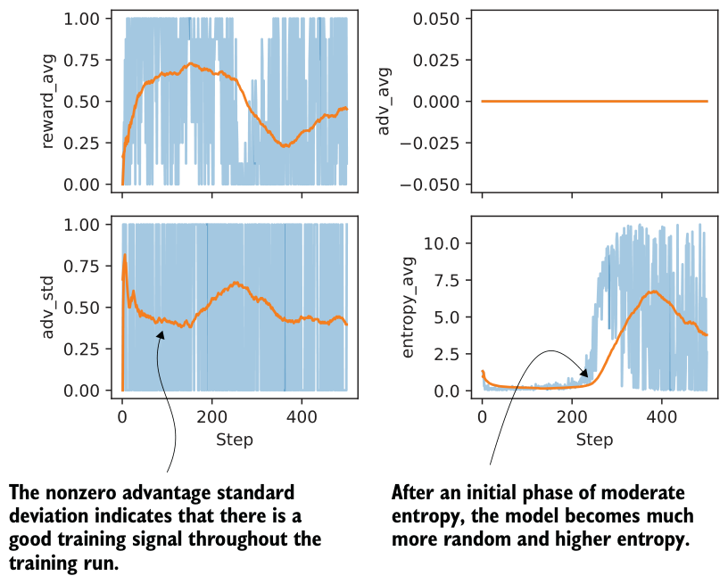
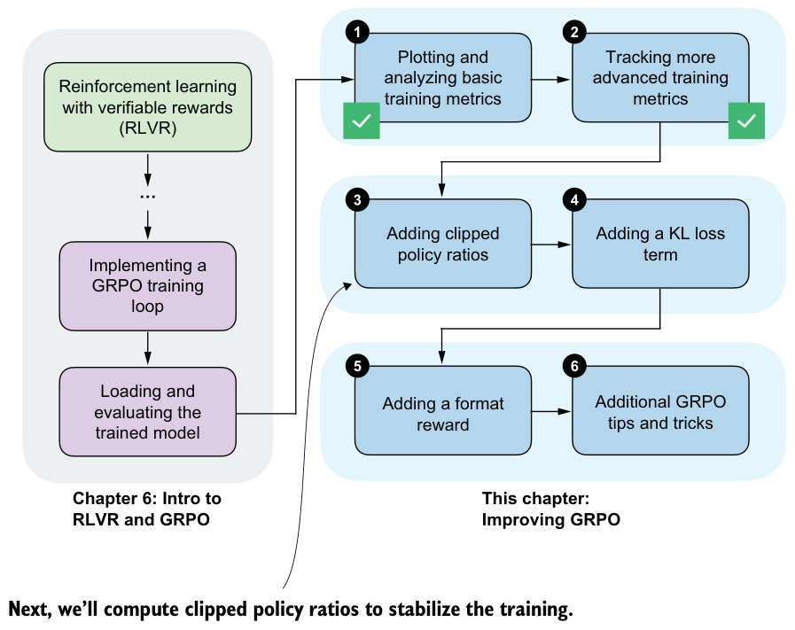

7.3.3Plotting additional GRPO metrics
Let’s build on the earlier computation of advantage statistics and entropy by analyzing these quantities in a concrete training run. To do this, we could update compute_ grpo_loss to use sequence_logprob_and_entropy and then print and log the entropy in train_rlvr_grpo, which calls compute_grpo_loss internally. To avoid duplicating a long code listing here, the full modified version is provided in the book’s supplementary materials. You can download it as follows:
download_from_github(
"ch07/03_rlvr_grpo_scripts_advanced/7_3_plus_tracking.py"
)This code can be run in the same way as the training script we used earlier:
uv run 7_3_plus_tracking.py \
--steps 500 \
--max_new_tokens 1024Since training takes a long time, you can download the resulting CSV log file and plot the new advantage statistics and entropy as follows:
download_from_github(
"ch07/02_logs/7_3_plus_tracking_metrics.csv"
)
plot_grpo_metrics(
"7_3_plus_tracking_metrics.csv",
columns=["reward_avg", "adv_avg", "adv_std", "entropy_avg"]
)We already looked at the average reward, but it’s included here again for comparison. The resulting plots are shown in figure 7.9. Here, moderate entropy should still be understood as exploratory behavior, just less random than the later high-entropy regime.

Let’s begin by analyzing the advantage shown in figure 7.9. As expected with GRPO-style normalization, the average advantage stays at zero throughout training. Since advantages are computed relative to the group mean, they sum to zero by design. As mentioned earlier, this metric mainly serves as a sanity check. If the advantage averages were to drift away from zero, that would point to a bug or a normalization issue.
The standard deviation of the advantages is more informative. Early in training, we see relatively high variance, which indicates that the model is producing rollouts with a wide range of quality. Over time, the advantage standard deviation gradually decreases and stabilizes, which means that the rollouts become more similar in quality. The key point is that as long as the advantage standard deviation remains nonzero and reasonably stable (meaning the value doesn’t vary much), there is still a usable learning signal, and training is still happening.
Next, let’s look at the entropy. Early in training, the entropy is relatively low and fairly flat, which indicates that the model behaves in a largely deterministic way. Increasing the sampling temperature would lead to more diverse rollouts, although it does not change the underlying entropy of the model itself.
Later in training, after roughly step 200, entropy increases quite noticeably. This means the next-token probabilities are more spread out and the model behaves more randomly. Very low entropy can also be a sign of collapse, where the model repeatedly produces the same or very similar outputs. In this run, the entropy and the increasing average reward and non-vanishing advantage standard deviation suggest somewhat healthy exploration rather than collapse. This is also consistent with the earlier MATH-500 evaluation accuracy, which stays in the 30%–40% range. That’s not great, but it is not near zero.
The main takeaway here is that each metric tells a slightly different part of the story, and they are most useful when considered together and in context.
7.4Stabilizing sequence-level GRPO using clipped policy ratios
So far, we have mainly focused on analyzing the GRPO training results. Next, we’ll start adding to the GRPO algorithm itself. The version we have used so far is a simplified form of GRPO, and in this section, we’ll introduce a clipped policy ratio in the GRPO loss, as illustrated in the overview in figure 7.10.

The clipped policy ratios will help limit overly large model weight updates and make training more stable, especially over longer runs. Ideally, we want to ensure that model performance doesn’t noticeably decline, as we saw previously.